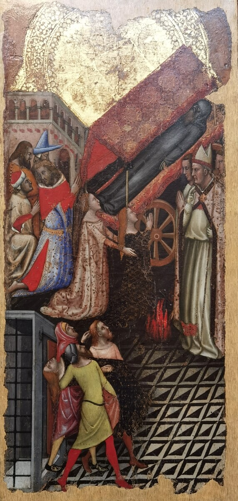

Design Brief
This paper follows the course template. The fields are empty for now — we will fill them in later.
Work in progress — content fields will be added by the GGU team.
The Secret Next Door
A Hybrid Exhibition Experience for the Pinacoteca Nazionale di Bologna
Authors
Polyxeni Chasanai · Kübra Topçuoğlu · Yixuan Qu · Saya Saito
Affiliation / Course / Institution
Digital Heritage and Multimedia — Group GGU (Global Girlies United)
Author emails
Polyxeni Chasanai — add email
Kübra Topçuoğlu — kubra.topcuoglu@studio.unibo.it
Yixuan Qu — add email
Saya Saito — add email
Abstract
150–200 words: problem, design objective, the experience, the method, the contribution.
Keywords (5–7)
1. Introduction and Design Problem
1.1 Context of the project
The Pinacoteca Nazionale di Bologna is the national art gallery of Bologna. It sits in the quiet university quarter near Via Zamboni, inside an old Jesuit building, and it holds some of the most important works of Italian and Bolognese art: Raphael's Ecstasy of Saint Cecilia, dramatic Baroque scenes by Guido Reni, and paintings by the Carracci family, Guercino, Parmigianino and others.
But there is one fact that most visitors never learn. Almost none of these paintings were made for the museum. About 200 years ago, between 1797 and 1810, Napoleon's rule closed the churches and convents of Bologna. Nearly a thousand paintings were taken from those churches and brought together into one building, and that building became the Pinacoteca. So the art is world-class, but the gallery is almost empty. In 2023 it reached close to 100,000 visitors, which is very low for a national gallery that owns a Raphael. Thousands of students walk past the door every day and never go inside.
Our project, The Secret Next Door, works with this real story. It tries to bring people in, especially the students who are right next door, and to give every painting back its story and its place in the city.
1.2 Main pain points / problems the project aims to solve
| Pain point / problem | Who is affected? | Why does it matter for the design? |
|---|---|---|
| The gallery is "hidden" and under-visited. It feels calm and empty, and people walk past without entering. | The museum itself, and the local students and tourists who never come in. | The design needs a strong, simple reason to pull people through the door from the street. |
| Information inside is mostly in Italian, with limited English. Foreign visitors cannot fully understand the works. | International tourists and young travellers. | The experience must remove the language barrier with a multilingual, easy guide. |
| The paintings feel silent and disconnected. They look like random old pictures and are easy to forget. | All visitors, especially people with no art background. | The design needs storytelling that gives each work a voice and links the works together. |
| The real story is not told: these works were taken from real churches across Bologna, but nobody explains this. | The museum's heritage and the city's own memory. | The design should reconnect each painting to its original home and to the city. |
2. Related Work, Benchmarks and Existing Solutions
2.1 Existing references, comparable projects and technologies
| Reference / project / technology | What it does well | Gap for our project |
|---|---|---|
2.2 Gap statement: what existing solutions do not solve
3. Method and Design Process
3.1 Design method used
We followed a user-centred and iterative design process. First we studied the museum, its collection and its real problems, using the museum's own pages, news articles and visitor reviews. Then we did a PACT analysis (People, Activities, Context, Technologies) to understand who the audience is and where the experience happens. From this we built one clear concept, "bring the paintings home", and turned it into an experience loop and a few simple interaction rules. After that we wrote the full experience as a branching story in Twine, screen by screen, and designed the visual interface in Figma. Finally we tested the flow by walking through it as a visitor would, and we fixed the steps that felt weak or confusing.
The table below only names each activity and points to the section where its result is shown. The actual diagrams (user flowchart, swimlane chart, user journey map) are placed in Sections 6 and 7, each as a figure with a caption.
| Design activity | Output produced | Where it appears |
|---|---|---|
| Concept design | One-sentence concept (the museum is the memory of Bologna's lost churches, and the visitor brings each painting home), with the audience, the context and the goals. | Section 4 |
| Experience loop | The cycle that repeats for every painting: approach, hear its story, answer one looking-question, get a fact, then light up its church on the map. | Section 5 |
| Interaction rules | Find the painting, answer one looking-question (hint and retry if wrong), unlock its church, fill the city map, reach 5 of 5, and share the result. | Section 5 |
| User flowchart | The step-by-step screen flow, from the street poster to the finale. | Section 6 |
| Swimlane flowchart | The same flow split between the actors: the visitor, the web app on the phone, and the museum. | Section 6 |
| User journey map | The experience over time, with the visitor's actions, emotions and touchpoints, from discovery to sharing. | Section 7 |
3.2 Data / materials used
While designing the project we worked with a few kinds of material. From class we used the PACT analysis and persona cards to study the audience. As museum sources we used the official Pinacoteca pages (pinacotecabologna.cultura.gov.it) for each painting, the museum's note about the 2024-2025 room redesign, and its public visitor numbers. We also used our own observations: students pass the museum on Via Zamboni every day but rarely go in, the rooms feel quiet and almost empty, and the English information is limited. For background we read news and art articles about the Napoleonic closures of the churches and about the paintings, and we collected photos of the five works and their original churches. From these materials we then built the concept, the interaction rules, the branching story in Twine and the interface in Figma.
4. Design Brief
| Title | The Secret Next Door: A Hybrid Exhibition Experience for the Pinacoteca Nazionale di Bologna. |
|---|---|
| Type of application / experience | A hybrid exhibition experience. It is a story-based museum trail that runs in the web browser (a PWA, no download), using street posters, QR codes, voice narration and on-screen animations inside the museum and at the original churches. |
| Primary audience | University students in Bologna, aged 18 to 28, who pass the museum every day but never go in. |
| Secondary audience | International tourists and young travellers, aged 18 to 40, who need clear, multilingual and engaging context. |
| Primary persona | Giulia, 22, a Bologna university student. She walks down Via Zamboni every day, lives on her phone, has little free time and no art background. She has always thought the gallery is "not for her". |
| Secondary persona | Liam, 28, a tourist on a short city trip. He is curious about culture but gets frustrated when museum labels are only in Italian. He likes things that are quick, clear and easy to share. |
| Project focus / context | A quiet university quarter; an indoor gallery with limited English information and short visit times; many original churches spread across the city; and a museum that is already redesigning its rooms to be more accessible. |
Star assets
The five star works of the project. Each one is a famous painting that was taken from a real Bologna church, and each one becomes a "home" on the Map of Exiles.
| Star asset | Short description | Media / image |
|---|---|---|
| Raphael, Ecstasy of Saint Cecilia | The gallery's most famous work, and the face on the street poster. A woman lets the music of the world fall so she can listen to the music of heaven. It was taken from the church of San Giovanni in Monte. |  |
| Ludovico Carracci, Conversion of Saint Paul (Conversione di Saulo) | A scene full of movement: Saul falls from his horse, blinded by a light from the sky, and rises again as Paul. It was taken from the church of San Francesco. |  |
| Guercino, Investiture of Saint William (Vestizione di San Guglielmo) | A duke kneels down and takes off his shining armour to be dressed as a simple monk. It was taken from the church of Santi Gregorio e Siro. |  |
| Vitale da Bologna, Stories of Saint Anthony Abbot (Storie di Sant'Antonio Abate) | A small gold panel full of tiny figures, almost 700 years old and one of the oldest works in the whole museum. It was taken from the church of Sant'Antonio Abate. |  |
| Guido Reni, Massacre of the Innocents (Strage degli innocenti) | A dramatic Baroque scene full of fear, with two small angels holding palm leaves at the top as a sign of hope. It was taken from the Basilica di San Domenico. |  |
Institution & goals
| Institution / client | Institutional goals | Audience goals |
|---|---|---|
| Pinacoteca Nazionale di Bologna. |
1. Make its world-class collection known, visited and enjoyed by everyone, instead of staying a hidden secret. 2. Increase the accessibility and enjoyability of the rooms, continuing the 2024-2025 redesign, and finally reach the student audience next door. |
1. Get a clear reason to come in and an easy way to understand the works, with no art background needed. 2. Understand the works in their own language and feel a real connection between the art and the city. |
Audience: motivations, barriers, capabilities, devices
| Audience | Motivations | Barriers | Capabilities | Devices |
|---|---|---|---|---|
| Primary audience (students) | 1. Curiosity about a "secret" right next to campus. 2. A short, fun and free activity they can share with friends. |
1. The feeling that the gallery is "not for them" and a bit boring. 2. Little free time and no art background. |
1. Very comfortable with smartphones and apps. 2. Used to QR codes and mobile web guides. 3. Active on social media. |
1. Their own smartphone. 2. Earphones for the voice narration. 3. A museum tablet, if they prefer. |
| Secondary audience (tourists) | 1. Interest in real local culture and stories. 2. Nice photos and a result to share online. |
1. Limited English information inside the museum. 2. Short visit time, and many do not know the gallery exists. |
1. Used to digital and audio guides. 2. Comfortable choosing a language on a phone. 3. Able to follow a map and walk a city trail. |
1. Their own smartphone. 2. A museum tablet. 3. Earphones. |
5. Design: Concept and Mechanics
5.1 Main idea of the project / user experience
The big idea is that every painting in the Pinacoteca is like an exile. Long ago it lived in a real church in Bologna; during the Napoleonic period the churches were closed and the works were carried into one building, and the city slowly forgot. The Secret Next Door uses this true story.
Outside, on the streets and at the old churches, a faded poster with a QR code invites you in. When you open it on your phone, the painting seems to "speak": "I used to live here. They took me away. Come and find me." Inside, a multilingual web guide, with no app to download, gives each painting its own voice and its story: which church it came from, who made it, and why it is here now. The visitor walks from work to work, looks closely at the real painting, answers one easy question about a detail, and "brings the painting home". Each time, a new light appears on a Map of Exiles. Step by step the map fills up with the city's lost churches. The visitor is not a passive tourist anymore: they become the person who finally remembers the city's forgotten art.
5.2 Winning / completion condition and scoring
This is an exhibition experience, not a competitive game, so there are no points to collect. The "win" is simply uncovering the secret. The mission is given at the very start: "Five paintings were taken from real churches. Find them all and uncover the secret." The completion condition is reaching 5 of 5 homes found, which means waking all five paintings and lighting every dot and line on the Map of Exiles. Progress is always visible through a simple counter that climbs from 0/5 to 5/5, together with the growing map, so the visitor can see how close they are.
Each painting is "unlocked" by answering one easy looking-question about a detail in the work. A wrong answer is never a punishment: it just gives a gentle hint and lets the visitor try again, so nobody gets stuck. When all five homes connect, the finale reveals the full secret and gives the visitor a shareable result card and a personal number on a public counter ("you are the 2,148th person to find the secret this month"). There is also one optional extra goal, the "homecoming": going outside to a real church, where the phone shows the painting back in its old place on the now-empty wall.
6. User Flow, Interaction and Hybrid System
6.1 General user flow
6.2 Swimlane flowchart: actors, responsibilities, decisions
6.3 Interaction description and categories
6.4 Hybrid and technological layers
| Layer | Software / hardware / material | Function |
|---|---|---|
| Physical layer | ||
| Digital layer | ||
| Museum layer | ||
| Social layer | ||
| Other |
7. User Experience as User Journey
7.1 User journey narrative
| Phase | User action | Touchpoint | Emotion | Pain point | Design response |
|---|---|---|---|---|---|
| Before / discovery | |||||
| Onboarding | |||||
| Mission / goals | |||||
| Capture / interaction | |||||
| Feedback / scoring | |||||
| After experience |
Interactive story / Twine link
8. Response to Pain Points and Innovation
| Pain point (Section 1) | Design solution | Expected effect |
|---|---|---|
8.1 Innovation beyond the state of the art
9. Conclusion
150–250 words: project, contribution, limitations, next steps.
Acknowledgments and Team Roles
| Team member | Role in project design | Role in writing the paper |
|---|---|---|
| Polyxeni Chasanai | Visual Designer | |
| Kübra Topçuoğlu | Narrative Concepts Designer · Prototype Designer / Technical Lead | Sections 1, 3, 4 and 5 |
| Yixuan Qu | Experience & Interaction Designer | |
| Saya Saito | Research & Content Lead |
References
Add publications in alphabetical order, with a consistent style.
Web links
Appendix: Design Brief Summary
The short paragraph form of the brief (one paragraph that summarises everything above).